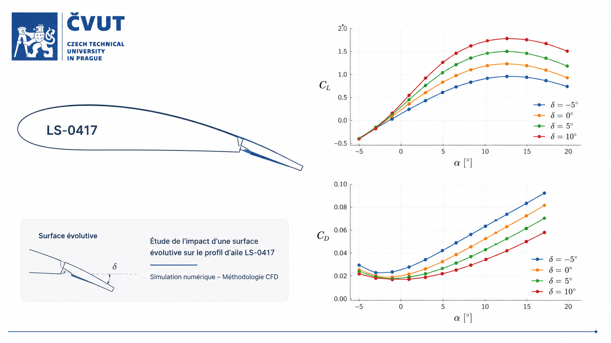

Étude de l'impact d'un profil évolutif sur le profil d'aile LS-0417
23 août 2026
Simulations CFD sous OpenFOAM pour la caractérisation aérodynamique et la validation de profils évolutifs. Études numériques 2D et 3D puis validation expérimentale en soufflerie.
Voir plus (résumé)
Objectif : Caractériser le comportement aérodynamique du profil LS-0417 par simulation numérique.
Méthodes : Génération du maillage, mise en place des cas OpenFOAM, simulations pour différents angles d'attaque et post-traitement des résultats.
Résultats : Analyse des coefficients aérodynamiques, des champs d'écoulement et de l'influence des paramètres numériques.
Compétences : CFD, OpenFOAM, maillage, Linux, post-traitement, analyse de résultats.